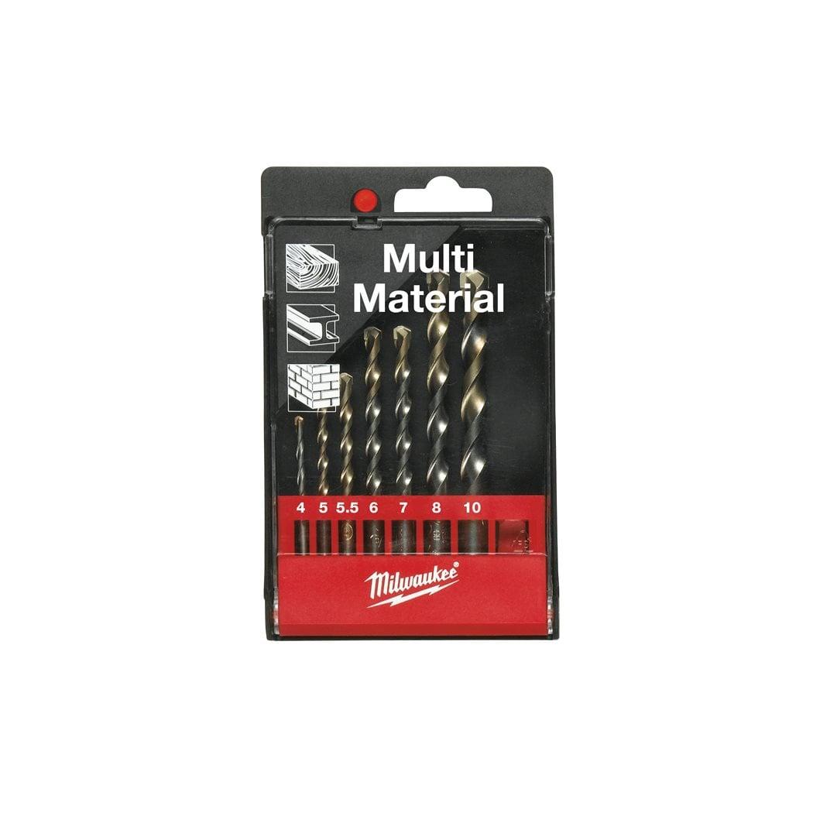
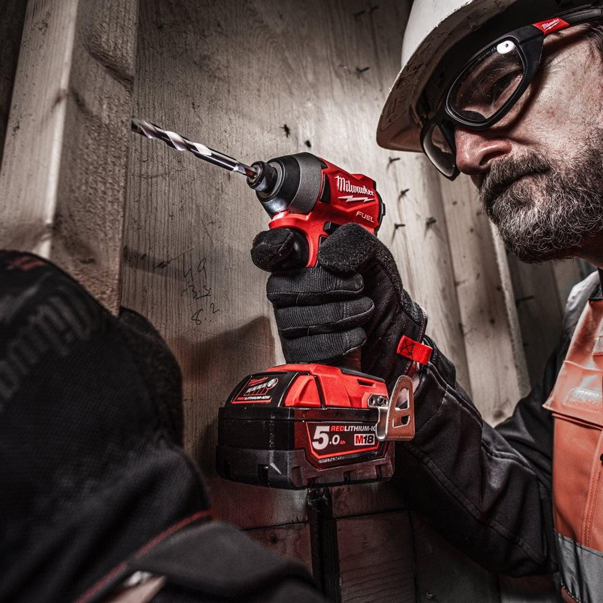

<h1>Milwaukee | Multi material Drill bit set (7pc)</h1><p>4932352836</p><div style="display:flex;flex-wrap:wrap;gap:8px"></div><h4>Features</h4><ul><li>Tungsten carbide tipped (TCT) drill bits will drill in metal, wood and stone (rotary mode only).</li><li>Hammer action cannot be used with these drill bits.</li><li>Ideal for tradesmen who need to drill through a variety of materials in one go.</li><li>Made in Germany.</li></ul><h4>Information</h4><table><tr><td>Contents</td><td>⌀ 4 / 5 / 5.5 / 6 / 7 / 8 / 10 mm</td></tr><tr><td>Pack quantity</td><td>7</td></tr><tr><td>Supplied in</td><td>Plastic cassette</td></tr></table>